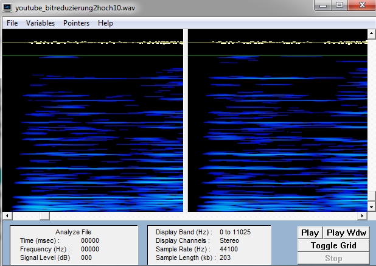
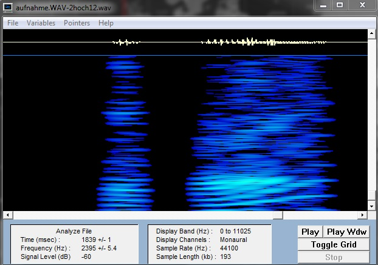

Erzeuge zwei kurze Audio-Files (max. 20 s), davon eines mit Music von einer CD deiner Wahl (wobei sich Music mit einer relativ hohen Dynamik, d.h. Wechsel zwischen relativ leisen und lauten Abschnitten empfiehlt). Wähle eine geeignete Abtastfrequenz (begründen !) und achte auf gute Aussteuerung. Das zweite Audio-File soll eine Sprachaufnahme (mit dem Headset aufgesprochen) enthalten (auf Übersteuerung achten !). Wähle hier eine Abstastfrequenz von 22 kHz, 16 bit Auflösung, mono. Die Einstellungen wie Abtastrate, Bitzahl und Kanalzahl können in Wavestudio Samplitude vorgenommen werden. Die Eingangsquelle (wahlweise Audio-CD oder Mikrofon) kann im Windows-Mixer 'Aufnahme' eingestellt werden. Lies beide Wave-Files mit wave_io ein und erkläre die Angaben im Header ! Wie hoch ist die Bitrate für die beiden Dateien?
Die Headerdaten für unsere Youtube bzw. Sprachaufnahme sind hier erläutert. Die Bitrate errechnet sich wie folgt:
"rate" * "bits" * "channels" = Bitrate (Bits pro Sekunde)
| infile | filelength | samples | rate | bits | bytes per sample | channels | (Bitrate) |
|---|---|---|---|---|---|---|---|
| youtube.wav | 2954998 | 1476422 | 44100 | 16 | 4 | 2 | 1.411.200 Bits pro Sekunde |
| aufnahme.wav | 3807776 | 1903150 | 44100 | 16 | 2 | 1 | 705.600 Bits pro Sekunde |
Modifiziere wave_io dahingehend, dass die Samples in der WAV-Datei in eine (lesbare) ASCII-Datei geschrieben werden. Lies die Dateien sine_lo.wav und sine_hi.wav (Sampling-Frequenz: 16 kHz) ein und bestimme aus den resultierenden Zahlenfolgen in der ASCII-Datei die Frequenz der Sinus-Schwingungen (Begründen und jeweils eine Periode für das Protokoll abspeichern). Überprüfe Deine Schätzung mit dem Spektralanalyse-Tool GRAM (Plots ins Protokoll !). Vorgehensweise: Menüpunkt Analyze File, Einstellungen: Freq Scale: Linear, FFT Size: 512, Time scale: 1 msec)
wave_io wurde um folgende Zeilen erweitert:
prt=fopen("prt.txt","wt");
for(i=0; i<n_wave; i++) {
fprintf(prt, "%i\n", wave[i]);
}
fclose(prt);
0 10606 -15000 10606 0 -10606 15000 -10606 0 ...Zwischen den beiden 0 Samples finden 3 Nulldurchgänge statt. Das bedeutet in 4 Samplewerten befinden sich 1,5 Schwingungen. 4 Samplewerte haben eine Dauer von 16000Hz / 4 , also 1/4000 Sekunde. In 1/4000 Sekunde finden 1,5 Schwingungen statt, das bedeutet eine Schwingung dauert 1/4000 * 1,5 = 1/6000 Sekunde. Das entspricht 6000Hz.
0 13858 10606 -5740 -15000 -5740 10606 13858 0 ...Zwischen den beiden 0 Samples finden 3 Nulldurchgänge statt. Das bedeutet in 8 Samplewerten befinden sich 1,5 Schwingungen. 8 Samplewerte haben eine Dauer von 16000Hz / 8 , also 1/2000 Sekunde. In 1/2000 Sekunde finden 1,5 Schwingungen statt, das bedeutet eine Schwingung dauert 1/2000 * 1,5 = 1/3000 Sekunde. Das entspricht 3000Hz.
Bei der zeitlichen Diskretisierung eines Analogsignals muß das sogenannte Abtasttheorem eingehalten werden. Wie lautet es und wie läßt sich der Grenzfall, für den es gerade noch gilt, illustrieren (Zeichnung !)?
Das Abtasttheorem besagt dass die Abtastfrequenz grösser als die doppelte, im abzutastenden Signal vorhandene
höchste Frequenz, sein muss.
Falls die Abtastfrequenz exakt der doppelten Höchstfrequenz entspricht
KANN eine Abtastung möglich sein wenn man genau die Maximalausschläge der Schwingung trifft (In Illustration grün dargestellt).
Im ungünstigsten Fall ist die Schwingung jedoch phasenverschoben, sodass man nicht die
Maximalausschläge, sondern genau die Nulldurchgänge abtastet. (In Illustration rot dargestellt).
Bei herkömmlichen Soundkarten tritt systembedingt kein Aliasing auf, weil das Audiosignal stets geeignet vorbehandelt wird (wie ?). Mit einem kleinen Trick läßt sich Aliasing jedoch nachweisen. Diese auch als Down-Sampling bekannte Methode besteht darin, dass man bei einer WAV-Datei z.B. jeden zweiten Abtastwert wegwirft. Man erhält so eine Wellenform, die genau die Hälfte der ursprünglichen Abtastfrequenz aufweist. Wenn man das Signal nicht vorher bandbegrenzt hat, können Aliasing-Verzerrungen hörbar werden.
Vor der Digitalisierung wird in der Soundkarte ein Tiefpassfilter angewendet, der sicherstellt dass Frequenzen größergleich der Abtastfrequenz nicht mehr im Signal existieren. Dadurch wird das Abtasttheorem eingehalten.
Modifiziere wave_io dahingehend, dass vom eingelesenen Signal jeder zweite Abtastwert verworfen wird und das resultierende Signal abgespeichert wird. Der Header muß natürlich entsprechend verändert werden! Wende das resultierende Programm zunächst auf 'sine_lo.wav' und 'sine_hi.wav' an. Welche Frequenzen erscheinen nach dem Down-Sampling (Spektrogramm und WAVs ins Protokoll !)? Was würde passieren, wenn man geeignet bandbegrenzen würde?
wave_io wurde um folgenden Code erweitert:
for(i=0; i < n_wave/2; i++) {
wave[i]=wave[i*2];
}
n_wave/=2;
freq_in/=2;
sine_lo_down.wavDie herkömmlichen PC-Soundkarten arbeiten meist entweder mit 16 oder 8 bit-Auflösung. Wie groß ist die Anzahl der bei diesen beiden Werten darstellbaren Amplitudenwerten ?
8 bit entspricht 2^8 Amplitudenwerten = 256 Amplitudenwerte = von -128 bis 127
16 bit entspricht 2^16 Amplitudenwerten = 65536 Amplitudenwerte = von -32768 bis 32767
Wir wollen nun wave_io so modifizieren, dass wir die Bitzahl reduzieren können. Dazu können wir z.B. alle Samples durch eine Potenz von 2 teilen (Integer-Division ohne Rest). Damit das resultierende Signal nicht leiser wird als das Original, kompensieren wir die Operation durch Multiplikation mit derselben Zweierpotenz. Zu beachten: Der Datentyp hat nach wie vor 16 bit! (Denselben Effekt erreicht man auch durch einfaches logisches 'Verunden' mit einem entsprechenden HEX-Wert, indem man mit dem LSB beginnend Bits 'ausblendet'.)
in wave_io wurde folgender Code eingefügt:
read_wave(&wave, &n_wave, &freq_in, &bits_in, in_name, &header);
for(i=0; i < n_wave; i++) {
wave[i] /= pow(2,10);
wave[i] *= pow(2,10);
}
Mit dem entstandenen Programm verändern wir die in Aufgabe 1 erzeugten Wave-Dateien. Ab welcher Bitzahl tritt bei Musik/Sprache eine hörbare/deutliche Verschlechterung der Qualität ein? Bei wieviel Bit ist das Sprachsignal noch verständlich ? (Waves für all diese Fälle ins Protokoll, Ausschnitte als Plots) Was charakterisiert das entstehende Quantisierungsgeräusch und macht es besonders störend?
Bei Musik tritt bei einer Bitreduktion von 10 Bit Eine deutliche Verschlechterung der Qualität auf.

Das Sprachsignal ist bei 11 Bit Reduktion gerade noch verständlich.
Bei 12 Bit jedoch nicht mehr.

Das Quantisierungsrauschen ist nicht permanent vorhanden, sondern tritt nur in Passagen mit Ton auf.
Das macht es für den Hörer sehr schwer das Nutzsignal akustisch vom Quantisierungsrauschen zu trennen.
Modifiziere Dein Programm noch einmal so, dass auch das Differenzsignal zwischen Original und bitreduziertem Signal, das heißt, das Quantisierungsrauschen ausgegeben werden kann. Welchen Charakter hat das Rauschen bei einer Reduktion um 1 bit, wie verändert es sich bei zunehmender Bit-Reduktion? (Waves für all diese Fälle ins Protokoll, Ausschnitte als Plots)
folgender Code wurde in wave_io eingefügt:
for(i=0; i < n_wave; i++) {
newwave[i] = wave[i];
wave[i] /= pow(2,10);
wave[i] *= pow(2,10);
wave[i] -= newwave[i]; //Differenzsignal fuer Aufgabe 3.4
wave[i] *= pow(2,16-10-2); //Q-Fehler verstärken
}
Bei einer Bitreduktion um 1 bit dominiert das Quantisierungsrauschen, jedoch vermag ein marginaler Anteil der Musik
durch dieses Zufallsdickicht hindurchzuschalmeien. Je höher die Bitreduktion, desto höher ist der Anteil des
Originalsignals im Differenzsignal. Daraus läßt sich schliessen dass immer größere Informationsanteile aus
dem Originalsignal verschwinden.